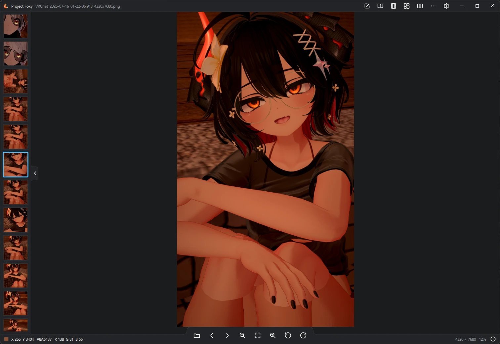

Software hecho por Vulito
Cosas que construyo para usar y compartir.
Un visor de imágenes, una compañera de IA que vive en tu PC y una extensión para Twitch. Cada proyecto tiene su propia página.

Project Foxy
Visor de imágenes rápido y liviano, con editor de fotos, creador de GIF, collage y comparador.
Ver página →
Project Ciel
Tu compañera de IA en tu propia PC: personalidad, memoria y voz para chatear, hablar y hacer streaming.
Ver página →Twitch Chat Keepalive
Extensión que evita que el chat de Twitch se congele y se reconecte en Firefox.
Ver página →Enlaces
Dónde encontrarme
Novedades, código y la forma de apoyar el trabajo.